Perplexity and Intrinsic Dimensionality: Application to t-SNE
March 20, 2018
Source:vignettes/articles/idp.Rmd
idp.RmdThis article retains its original experiments and examples. For current package usage, see the usage guide.
Introduction
This is the second part of an investigation into the relationship between perplexity and intrinsic dimensionality. See the first part for the theory on how perplexity is related to the intrinsic dimensionality of a dataset via the input weights. The short version is that, borrowing terminology and ideas from the multi-scale JSE paper, given the usual t-SNE perplexity calibration, it’s then possible to also calculate the “soft” correlation dimension for that perplexity using only data we already generated during the calibration. The term “soft” here indicates that the neighborhoods are fuzzy due to using the Gaussian weight function, compared to the “hard” sphere definition of neighborhood usually used in correlation dimension. For the rest of the discussion, when referring to correlation dimension, I’ll drop the “soft” modifier, because we’re only calculating soft correlation dimensions.
In the multi-scale JSE paper, the correlation dimension calculation is repeated for multiple perplexities and the maximum value is treated as the estimate of the intrinsic dimensionality for the dataset. We can do exactly the same, but use the analyical expression, rather than a finite difference estimate. Several datasets we’ll look at here were also used in the multi-scale JSE paper, and values for the estimate of the intrinsic dimensionality are also given, so we can do a bit of a sanity check on our calculations by comparing them with the result in the multi-scale JSE paper.
Intrinsic Dimensionality Perplexity (IDP)
What can we do with the intrinsic dimensionality estimate? In the multi-scale JSE paper, the estimate is used in the multi-scale method to modify the output weight function bandwidths to account for the difference in the output and input dimensions. But it’s not used to choose a perplexity: the whole point of the multi-scale methods is to obviate the need to choose a perplexity at all. In multi-scale methods, multiple perplexities are used and the different probability matrices that result are averaged.
Our efforts will be more modest. We’re going to use just one perplexity, but try and use the intrinsic dimensionality estimate as a guide to choosing the perplexity: specifically, we’ll use the perplexity that is associated with the intrinsic dimensionality estimate. I’ll refer to that as the Intrinsic Dimensionality Perplexity (IDP).
Without getting into any of the derivations we did previously, these are the steps we’ll take:
First, for each point in the dataset, we calculate the un-normalized input weight matrix, \mathbf{V}, which is associated with a perplexity, U. From there the soft correlation dimension for point i and perplexity U, \delta_{i, U} can be written as:
\delta_{i, U} = \frac{2}{V_i} \left\{ \sum_{j}^{N} v_{ij} \left[ \log \left( v_{ij} \right) \right] ^ 2 -\frac{1}{V_i} \left[ \sum_{j}^{N} v_{ij} \log \left( v_{ij} \right) \right]^2 \right\}
where N is the number of observations in the dataset, v_{ij} is the element at \mathbf{V}\left[i, j\right], and V_{i} is the sum of the ith row of \mathbf{V}.
The correlation dimension associated with the entire dataset for the given perplexity is just the mean average of the individual estimates:
\hat{\delta}_{U} = \frac{1}{N} \sum_{i}^{N} \delta_{i,U}
The estimate of the intrinsic dimensionality, D, is the maximum value that the correlation dimension attains as the perplexity is varied.
D = \max_{U} \hat{\delta}_U The IDP is then:
\DeclareMathOperator*{\argmax}{arg\,max} IDP = \argmax_{U} \hat{\delta}_{U}
Multiple IDPs?
Some datasets have different dimensionalities depending on the length scale (corresponding to different perplexities), e.g. the Swiss Roll dataset, while three-dimensional, can be considered two-dimensional over short distances. Under circumstances where there is more than one maximum of the correlation dimension, we will favour the smallest IDP value, on the basis that viewing an unfolded Swiss Roll is more interesting than a folded one.
Swiss Roll-like manifolds seem less common in the real world than datasets made up of clusters, but here there’s also a related issue: is one perplexity really appropriate across a dataset that’s made of multiple clusters, which may well all be of differing size, variance and homogeneity? How to Use t-SNE Effectively notes this problem and it seems like an obvious solution involving intrinsic dimensionality would be to calculate separate IDPs by averaging separately over each cluster, rather than the entire dataset. To avoid this discussion getting too unwieldy, we will postpone thinking about that for now, and focus on single perplexity values from averaging over the entire dataset.
Method
For an initial attempt at calculating the IDP, we we will carry out the usual t-SNE perplexity calibration multiple times at different perplexity values. We’ll start at a low value (e.g. 3-5) and look at every integer perplexity up to around 300, which should be a large enough value to capture any features of interest.
As discussed above, each observation in the dataset, i, is associated with its own estimate of the correlation dimension at a given perplexity, U, \delta_{i,U}. We won’t use these individual, per-point estimates directly in this discussion, but take the mean average of all of them, \hat{\delta}_U to give a single correlation dimension for a given perplexity.
Dimensionality Plots
Datasets discussed here will be characterized by their dimensionality plot, which is the mean “soft” correlation dimension estimate, \hat{\delta} (which I will just refer to as the correlation dimension, and ‘Dcorr’ as an axis label) against perplexity.
Time Considerations
Obviously, doing loads of perplexity calibrations is slow, and the
time taken increases with the square of the dataset, so carrying out
hundreds of calibrations on a large dataset (mnist or
fashion for example) is not something you want to do more
than once, and couldn’t be integrated into standard t-SNE. A simpler
approach that isn’t such a computational burden is suggested in the
section “A Practical Suggestion for Perplexity Selecton”.
Results: Synthetic Data
Both “How to Use t-SNE Effectively” and the multi-scale JSE paper used synthetic data to explore perplexity and intrinsic dimensionality, respectively, so we shall also start with some simple synthetic data which will hopefuly provide some clear trends and patterns, before we look at real data, which inevitably destroys all our hopes and dreams with its annoying messiness and real-ness.
2D, 5D, 10D Gaussian
An obvious place to start is with some simple Gaussians. We’ll look at the effect of increasing dimensionality, and also of the effect of increasing the amount of data available to us, although even with these datasets, I don’t look at more than 3,000 points, due to the amount of time it takes to generate plots for larger datasets.
g2d_1k <- snedata::gaussian_data(n = 1000, dim = 2)
g5d_1k <- snedata::gaussian_data(n = 1000, dim = 5)
g10d_1k <- snedata::gaussian_data(n = 1000, dim = 10)
g2d_3k <- snedata::gaussian_data(n = 3000, dim = 2)
g5d_3k <- snedata::gaussian_data(n = 3000, dim = 5)
g10d_3k <- snedata::gaussian_data(n = 3000, dim = 10)The black curve is 2D, the red curve 5D and the blue curve 10D. The left plot shows the results for 1000 points. The right hand plot is for 3000 points.
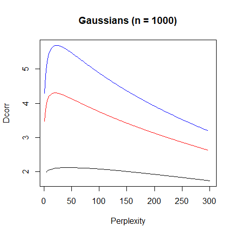 |
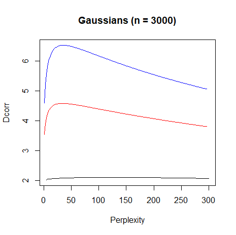 |
All the curves have the same basic shape (the black curve has the same shape although it’s hard to see): a steep climb at low perplexity to a maximum, followed by a more shallow decrease.
For the 2D Gaussian, the intrinsic dimensionality is
2.12. For the 5D Gaussian, the intrinsic dimensionality is
4.30. For the 10D Gaussian, the intrinsic dimensionality is
5.69, so the estimate of the intrinsic dimensionality
becomes an underestimate with increasing dimensionality quite
quickly.
With 3000 points, the estimates of the intrinsic dimensionality are
2.10, 4.58 and 6.53,
respectively. These are all closer to the true dimensionality, but not
that much closer.
So even for the simple case of a single Gaussian, the absolute value of the intrinsic dimensionality needs a large number of points to be accurate. But we’ll hope that the perplexity associated with the intrinsic dimensionality is still useful.
Let’s see how useful an IDP might be. Looking at t-SNE plots of Gaussians is not exactly informative at the best of times, but How to Use t-SNE Effectively does note that a too-low perplexity can lead to the illusion of clusters in the data, even with Gaussians.
In order to compare with their plots, we’ll use their example of a 100-dimension Gaussian with 500 points. For this data, the estimated intrinsic dimensionality is 6.8 and the IDP is 23. Running t-SNE on it:
g100d_500 <- snedata::gaussian_data(n = 500, dim = 100, color = "#003399")
g100d_500_pexp <- perp_explore(g100d_500, scale = FALSE)
g100d_500_tsne <- smallvis(
g100d_500,
Y_init = "spca",
scale = FALSE,
perplexity = 23
)The final result is:
 |
This gives the smooth, fairly uniform distribution of points that the authors identify as being ideal, but which they found by manually tuning the perplexity. They use a perplexity of 30, which is close enough to our choice, seeing as they try perplexities between 5 and 100. A good start for IDP.
Ball, Sphere and Helix
The multi-scale JSE paper presents data for some other simple synthetic data: a ball, a hollow sphere, and a circular helix:
ball <- snedata::ball(n = 1500)
sphere <- snedata::sphere(n = 3000)
helix <- snedata::helix(n = 1500, rmajor = 3, rminor = 1, nwinds = 30)The ball and sphere have an obvious structure. Below on the left is a plot of PCA on the circular helix, which gives a good indication of what it looks like and on the right are the intrinsic dimensionality plots. The ball plot is in black, the sphere plot is in red, and the helix plot is in blue:
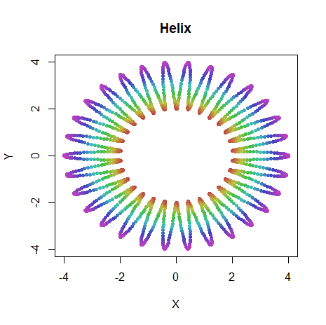 |
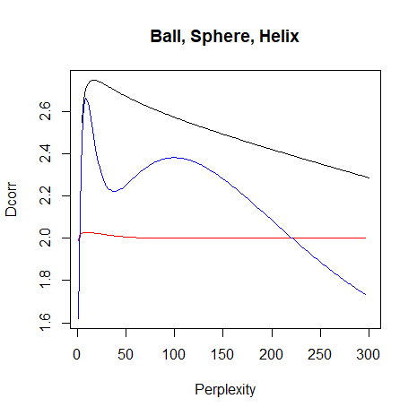 |
The sphere and ball plot show a similar structure to the Gaussians, with one maximum on each plot. The helix plot shows a more interesting structure: two maxima. Presumably the lower IDP (perplexity = 13) represents the radius of the helix, and the higher IDP (perplexity = 104) is the overall circular structure created by joining the ends of the helices.
Perhaps this can be illuminated by running t-SNE at the different perplexities:
smallvis(helix, Y_init = "pca", scale = FALSE, perplexity = 13)
smallvis(helix, Y_init = "pca", scale = FALSE, perplexity = 104)Results are below, the low-IDP result on the left and the high-IDP result on the right:
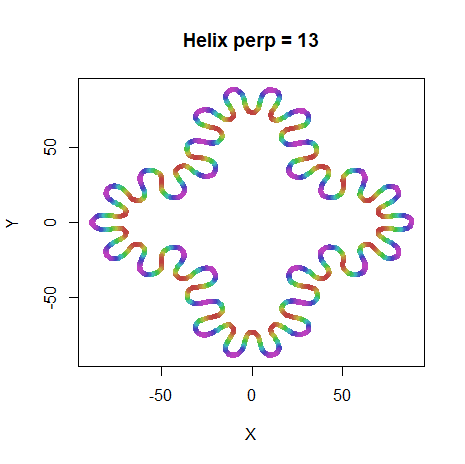 |
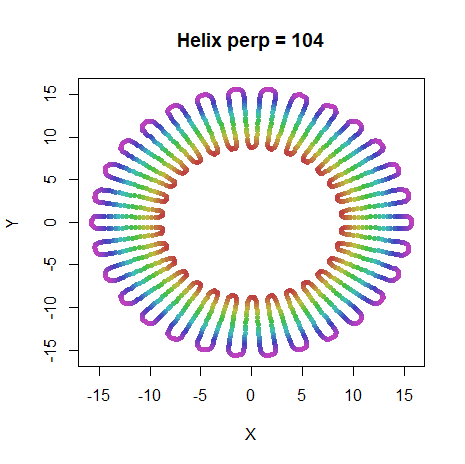 |
As can be seen, at perplexity 13, the larger circular structure is sacrificed to emphasise the loops of the helix. At higher perplexity, the overall circular structure is maintained.
Here’s a comparison of the intrinsic dimensionalities calculated in
smallvis and those given in the multi-scale JSE paper via
the finite difference method (the perplexity at which the maximum occurs
is in parentheses):
| Name | msJSE | smallvis |
|---|---|---|
| ball | 2.81 | 2.75 (17) |
| sphere | 2.02 | 2.03 (14) |
| helix | 2.47 | 2.66 (13), 2.38 (104) |
The ball and sphere results are pretty
close. Only one helix maximum is reported in the
multi-scale JSE paper, and it lies between the two values calculated
here. I’m not that concerned because the exact values will be affected
by the radius of the helix and that of the overall circle, which aren’t
given in the paper, so I just estimated them from an image in the
paper.
Swiss Roll
Like helix, the Swiss Roll also has two different
structures at two scales: the overall curled topology at a large scale
and the unfolded two-dimensional sheet that results from small
scales.
sr3k <- snedata::swiss_roll(n = 3000, max_z = 30)Here’s the dimensionality plot:
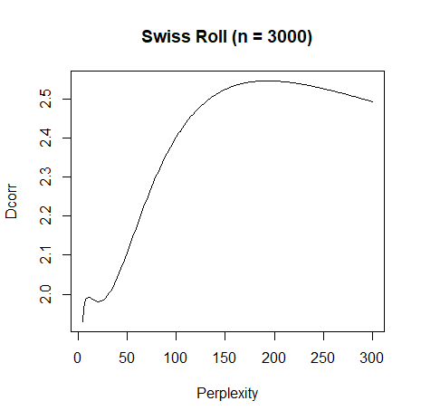 |
Pleasingly, there are indeed two maxima: a dimensionality of 1.99 at
perplexity 11, and a dimensionality of 2.55 at perplexity 193. As it’s
pretty fruitless to try and unfold the Swiss
Roll with t-SNE, here are the ASNE results for the two perplexities.
Both embeddings were intialized with the Laplacian Eigenmap using the
symmetrized ASNE matrix with perplexity = 11, which is already quite
unfolded. The maximum number of iterations was set to 5,000,
max_iter = 5000, to allow the low perplexity result to
converge properly. The perplexity 11 result is the left hand result
below, and the perplexity 193 result is on the right hand side:
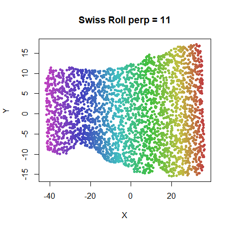 |
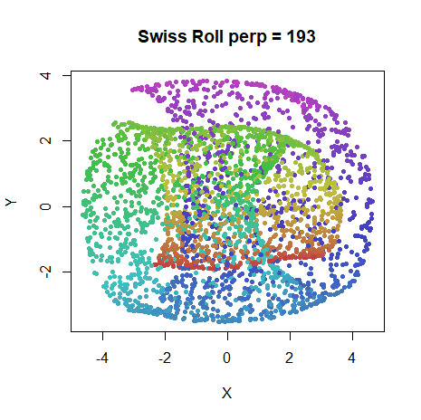 |
The perplexity 11 result is definitely unfolded, and if it isn’t that even-looking, that’s just par for the course with SNE. The perplexity 193 result, on the other hand, definitely represents the fully folded structure.
Ring
In the COIL-20 image dataset (discussed later), several of the image classes embed as a series of circles, no doubt related to the fact that each image in the class is the same object slightly rotated. So a 2D ring may be an interesting synthetic structure to look at in terms of dimensionality. In a somewhat similar vein, How to Use t-SNE Effectively discusses a synthetic dataset involving two linked rings.
Before we get to that, let’s see what sort of structure a single ring has. We’ll look at a regular 2D circle (with 100 points), and a “fuzzy” version, which I have created from the 2D Gaussian we looked at above, but with points in the center removed (anything pont a distance from the center of the distribution of <= 2 was deleted). Below are the 2D structures and their dimensionality plots:
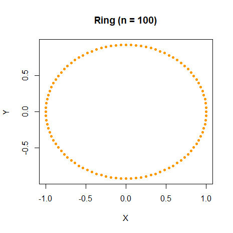 |
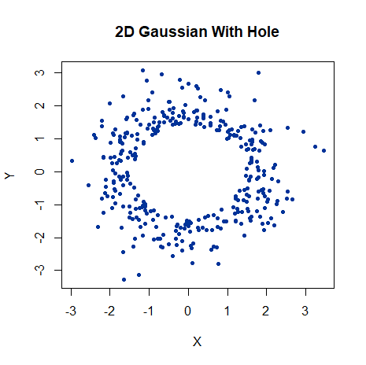 |
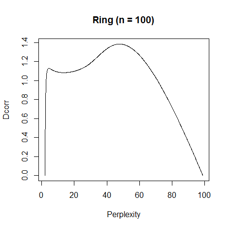 |
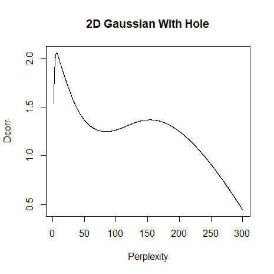 |
Both dimensionality plots show the same basic shape with two maxima, although the relative heights are reversed between the two plots, which reflects the trade-off between the size of the hole and the density of points on the circumference. For the simple circle characterized in the left hand plot, the first maxima suggests an intrinsic dimensionality of 1.13 at around perplexity = 4. This is probably very local structure where the curvature of the data is not terribly pronounced on the scale looked at, so every point’s neighborhood is close to linear, and hence the dimensionality close to 1.
Linked Rings
As noted above, How to Use t-SNE Effectively has an interesting example involving two linked rings (the same data as used to generate the ring data used above): one aligned along the XY plane, the other in the YZ plan. Both are then slightly rotated. At low perplexity they are embedded as two separate circles, whereas the linkage is displayed at higher perplexities.
We can use the snedata package to reproduce this
dataset:
link_100 <- snedata::link_data(n = 100)Below to the left is the PCA on the data which shows the layout fairly well. On the right is the dimensionality plot. Also shown on the right hand plot, in red, is the dimensionality plot for the single ring that we just saw in the previous section.
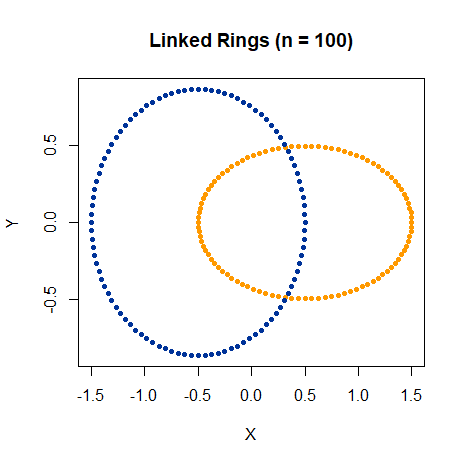 |
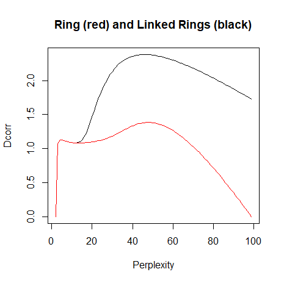 |
The dimensionality plot for the two linked rings has a similar structure to the single ring with two maxima. At low perplexity we see identical curves, with the location of the first maxima again occurring at a perplexity of 4.
The presence of the second ring is felt by the broader maximum recording a much larger dimensionality (2.38), but it also occurs at close to the same perplexity as the single ring, in this case a perplexity of 46.
Below are the t-SNE results with perplexity 4 on the left, and 46 on the right:
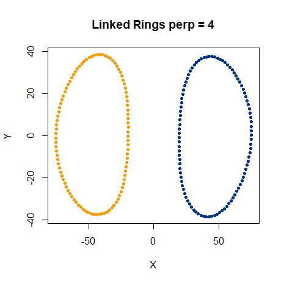 |
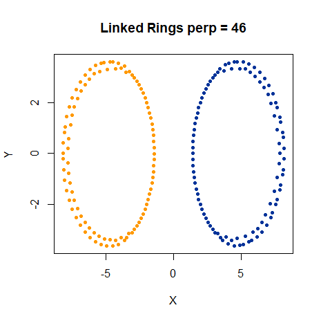 |
For both perplexities, the unlinked forms are favored, although the perplexity 46 results show an odd “ripple” in the ring structure (these are also present in the “How to Use t-SNE Effectively” results). I did observe linked versions for both perplexities, but these were always higher in error than the unlinked versions, and usually resulted from initializations where the linking was already present and the optimization got trapped in a local minimum. This was most pronounced with the perplexity = 4 results. For the perplexity = 46 results, it seemed easier for the embedding to “escape” some initially overlapping layouts. The initial linkage was seen with both the PCA and spectral-based initializations I usually favor for t-SNE, and I also found that early exaggeration helped produce better results here, even though I haven’t found this to have a huge effect on most datasets.
In short, despite giving this dataset every opportunity to stay in a linked configuration, the unlinked layout had a lower error for both perplexities.
Tempting as it was to hope that the second maximum represented a perplexity that corresponded to the linked layout, it seems our hopes have been dashed. Not that they should have been all that high in the first place, because the second maximum was already present in the single ring dimensionality plot. To drive the point home, let’s consider an unlinked version of the linked rings, where the only change is that the two rings have been translated along the X-axis (before they are rotated) so that they don’t. Here, yet again, is the dimensionality plot, with the unlinked data added as a blue curve:
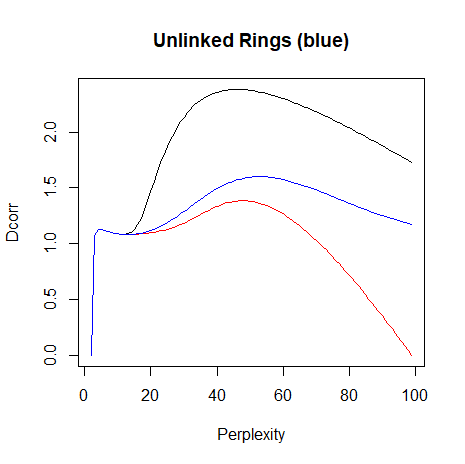 |
The plot is now closer to the single ring result, as you might expect due to the increased distance between the two rings and hence the lower similarity between points in different rings. But the two maxima are still there. I would defy anyone to look at the black and blue curve and diagnose a linked topology from one and not the other.
Like the Swiss Roll, this dataset is perhaps too low-dimensional for t-SNE. Does ASNE give very different results?
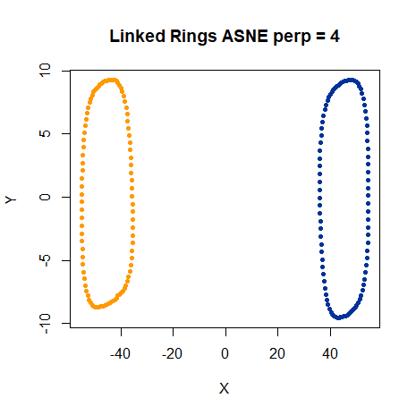 |
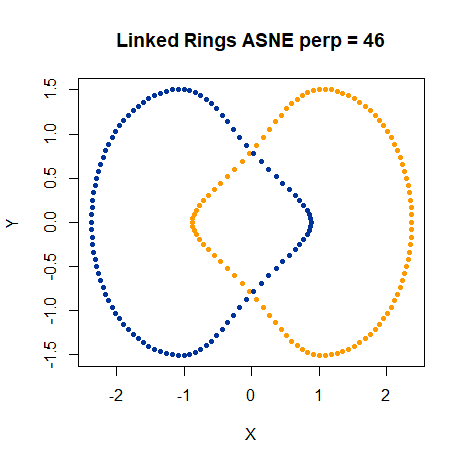 |
I should note here that I initialized the perplexity 4 result from the final coordinates of the perplexity 4 t-SNE result, and this lead to the lowest error of all the ways I tried. Random initialization was never able to initialize the results in a way that ASNE could disentangle them.
But the headline news is that for perplexity 46, the linked form of the rings is now favored. I initialized the ASNE run from linked, unlinked and random initializations, but the results always converge to the linked version, the opposite of what I saw for t-SNE. It should be noted that the linked version appears for perplexities larger than 30, so there’s nothing magical about what we see at perpelxity 46. It’s also worth noting that the strange “ripple” we saw with the t-SNE results at perplexity 46 is no longer present with the ASNE results.
If we decide that it’s just a coincidence that the ASNE result with perplexity 46 generated the linked configuration (and it would be hard for me to argue against that interpretation), at least the IDP associated with the first maximum reproduces the unlinked topology well using either t-SNE or ASNE and without the distortion of the ring structure that occurs at the higher perplexity.
Reproducibility of the perplexity = 46 results
Finally, I should point out that the perplexity = 46 t-SNE results we’ve been looking at here are decidedly not the same as those in “How to use t-SNE Effectively”. You can confirm this for yourself by re-running the results on that webpage with the interactive JavaScript widget, multiple times if you like. The results invariably converge to a linked configuration with the code on that page.
I’d love it if there was an error with the snedata
implementation of the linked rings used here, because the results in
“How to use t-SNE Effectively” show the linked topology appearing
between a perplexity of 30 and 50, right in the region identified by the
second maximum in the dimensionality plot. But we’ve already seen that
this feature is present with a single ring, and anyway, even though I
did find a bug in the snedata code, that has been fixed for
the data you see here.
It’s also not a problem with the initialization, early exaggeration
or learning rate settings. I tried many combinations of these, but the
unlinked configuration always had the lower error. For a second opinion,
I turned to the Rtsne package,
itself a wrapper around the “official” Barnes-Hut t-SNE
implementation and which has no connection with any of the code in
smallvis. Rtsne also judges the unlinked configuration has
a lower error, despite various initialization options, including the
linked and unlinked output from smallvis t-SNE runs. Here’s
an example of how I ran Rtsne:
link100_rtsne_u46 <- Rtsne::Rtsne(
X = link_100[, 1:3],
perplexity = 46,
eta = 20,
exaggeration_factor = 4,
theta = 0,
pca = FALSE,
verbose = TRUE
)As the perplexity is increased, smallvis does
start to favor the linked results and the output resembles that given in
“How to Use t-SNE Effectively” again:
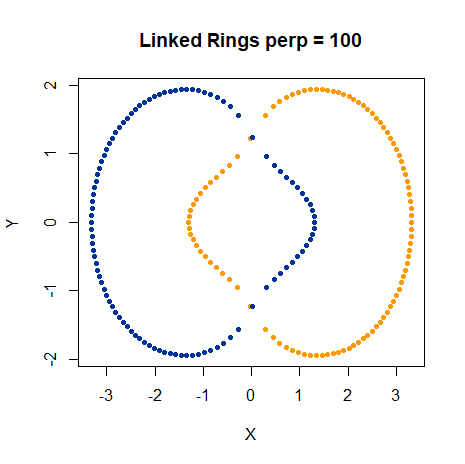 |
I currently don’t have an explanation of what causes the “How to Use
t-SNE Effectively” t-SNE implementation to converge to different results
from smallvis and Rtsne. If I ever work it
out, I will update this digression.
Three Clusters
The three clusters in How to Use t-SNE Effectively exerts a strange fascination for me, as it usefully illustrates the limitations of t-SNE in reproducing the properties of what seems to be a trivial data set. I have gone into great detail on this data previously, but to get started, we just need to know it involves three 50D Gaussians with 50 points each, arranged in a line, with one of the clusters a lot further away from the other two:
three_clusters_50 <- snedata::three_clusters_data(n = 50) |
Here’s the dimensionality plot:
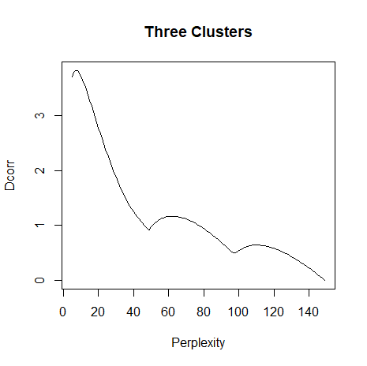 |
This shows three maxima: at perplexity 7, 62, and 110. These are clearly picking out the existence of three clusters in the data. We’re really going to stack the deck in our favor by initializing from the scaled PCA, which at least starts off with the clusters in a straight line, with the relative distances correct. But do any of these perplexities give the desired result?
three_clusters_tsne7 <- smallvis(
three_clusters_50,
scale = FALSE,
Y_init = "spca",
perplexity = 7,
eta = 10
)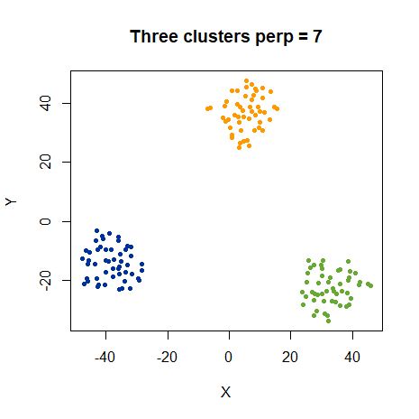 |
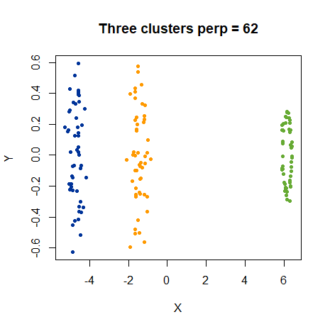 |
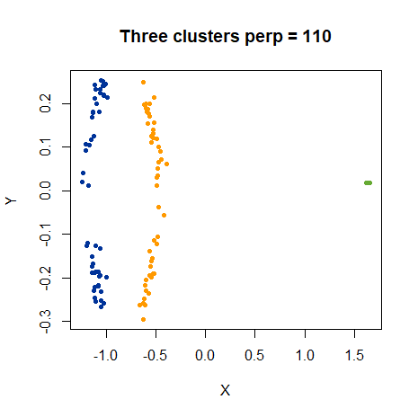 |
No, they do not, not that I really expected them to. “How to Use t-SNE Effectively” leaves open the possibility that multiple perplexity values might be a solution here, but we’ll not pursue that further now. At least using the lowest IDP does a good job of representing the individual clusters: if you look at the axes, you’ll see they are on different scales, which is why the clusters look stretched in the Y-axis. But this is preferable to see more details in the shapes of the clusters at the higher perplexities.
Reproducing global topologies seems like a tall order for IDP. But based on the three clusters, the Swiss Roll and the linked rings results together, using the first maximum as the IDP seems like a good strategy.
Subset Clusters
Here’s one more example from How to Use t-SNE Effectively: two Gaussians, each of 50 dimensions and 75 points each, but one (colored blue) has a standard deviation of 1, and the other (yellow) has a standard deviation of 50. They are both centered at the same point, so the blue cluster is contained entirely within the yellow one. Here’s a PCA plot which shows the situation:
 |
subset_clusters <- snedata::subset_clusters_data(n = 75, dim = 50)and here’s the dimensionality plot:
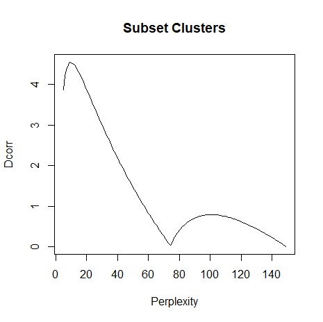 |
Note that for this dataset, because of the distribution of distances, numerical issues prevent the perplexity calibration succeeding for a small number of points at low perplexities (perplexity 14 and below). When this happens, the k-nearest neighbors get a weight of 1 each, and the intrinsic dimensionality is set to 0. As a result, for this dataset, the dimensionalities in the interesting region may be subject to a small amount of uncertainty.
With that caveat in mind, the IDP for this dataset is 9 and the t-SNE result is:
subset_clusters_tsne9 <- smallvis(
subset_clusters,
scale = FALSE,
Y_init = "spca",
perplexity = 9,
eta = 10
)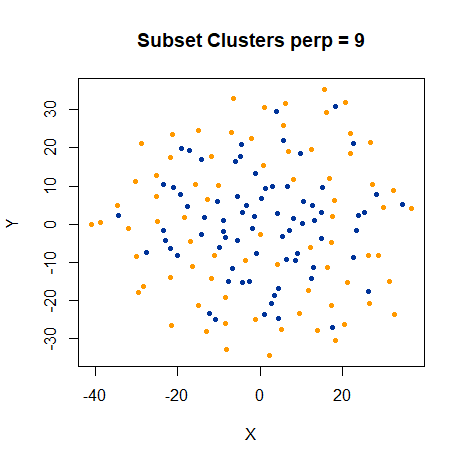 |
As noted in How to Use t-SNE Effectively, the smaller blue cluster has its size hugely expanded. But the chosen perplexity at least avoids the ring shape that forms at large perplexities, so once again the IDP is a “sensible” value.
Overall, using the IDP (at the lowest perplexity if there are multiple maxima) does a good job with the simple synthetic data used here. Time to move on to some more complicated real datasets.
Results: Real Datasets
We’ll now look at how perplexity and correlation dimension are related with the usual datasets.
The multi-scale JSE
paper also looked at the coil20 and frey
datasets and a subset of mnist, in their case a 3,000 item
subset. We’ll compare our intrinsic dimensionality estimates with theirs
when we hit those datasets, and summarize the comparison at the end.
Settings
We’ll use standard settings for most of the t-SNE experiments in these pages, and in particular those from our previous investigation into perplexity, with two changes. First, we’ll only use the standard 1,000 iterations. Second, we’ll use the IDP as the perplexity value.
The plots on the perplexity page provide a good set of references for what we should expect to see. Perplexities between 25-50 seem fine for every dataset. Low perplexity (e.g. 5) seemed too low, and required larger number of iterations, without creating any exciting new features in the visualizations.
# An example
iris_tsne <- smallvis(
iris,
scale = "absmax",
perplexity = 5,
Y_init = "spca",
eta = 100,
exaggeration_factor = 4,
stop_lying_iter = 50,
max_iter = 1000,
epoch = 100
)iris
Here’s the dimensionality plot for iris:
 |
The overall shape of the curves is very reminiscent of the synthetic three-clusters dataset we looked at above. The suggested perplexity is 5 for the dataset as a whole. We already know that we’re not going to love the results, but here they are:
 |
Perhaps this indicates that for small datasets, the perplexity tends
to be under-estimated? Alternatively, I could argue that the
iris dataset is of sufficiently low dimensionality that
t-SNE isn’t appropriate, and we should expect or even want to
see this sort of distortion of the data so we know to use a different
output weight function. Yeah, not sure I buy that either, but here’s the
HSSNE result with the stretching function
reduced:
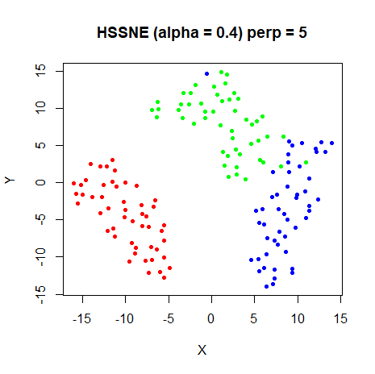 |
That is much better. We could just give up now. But we won’t. Still so many other ways for us to be disappointed! Also, in my hands, the pBIC was awfully fond of suggesting a perplexity of 5 as the optimal result for these datasets (see the perplexity page for more details), so I’m in good company.
s1k
 |
I wasn’t expecting to see much in this plot, as s1k is
another synthetic dataset designed by me, such that the ten clusters are
very similar. And this is a reassuringly featureless dimensionality
plot. The recommended global perplexity for this dataset is
26 and here is the resulting t-SNE:
 |
Big improvement over the results for iris, I think.
Given that the IDP has suggested a perplexity that’s slap bang in the
middle of the 20-30 range, this is not an Earth-shaking revelation: this
is the sort of value you would try first anyway based on the received
wisdom anyway. But at least it didn’t suggest a perplexity of 5. My
confidence has returned somewhat.
oli
The Olivetti faces contain 40 different image classes (one per different face). Seems like it could be a candidate for having some hidden structure. Will the dimensionality plot show anything?
 |
It does not. The IDP is 17 for this plot, slightly on the low end of things. Let’s see how the t-SNE turns out:
 |
Another perfectly good visualization.
frey
The Frey faces dataset doesn’t have any classes it can be easily split into on a priori basis, so if the dimensionalty plot has some extra structure, that would be quite interesting (and challenging for how we would work out what was going on):
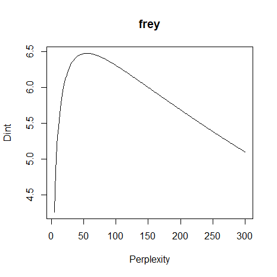 |
But there’s no hint of any extra structure there. The ms-JSE paper gave an intrinsic dimensionality of 6.43, while our value is 6.48. Pretty close! The t-SNE result for the suggested perplexity, 55 (a little outside the usually suggested range) is:
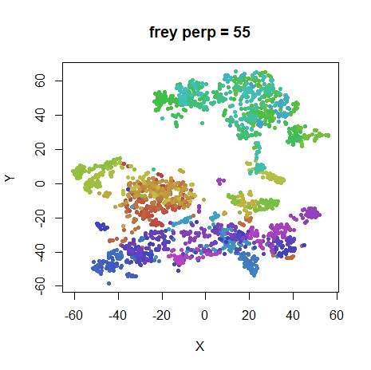 |
Comparing this to the plots at other perplexities suggests this is perfectly reasonable result.
coil20
coil20 is another dataset with quite a lot of classes,
and these underlying classes often arrange themselves into loops rather
than blobs, so maybe we’ll see something interesting here:
 |
There’s an obvious “shoulder” on the plot compared to all the other datasets, and that counts as “interesting” to me. This may well be indicating that the different classes have different intrinsic dimensionalities. Let’s see how well the IDP of 35 does:
 |
Hmm. That result looks ok. Comparing this to the plots at other perplexities, a much lower perplexity of 5 does a good job of separating the different loops while maintaining their structure. There’s not really any indication from intrinsic dimensionality that such a low perplexity is warranted though.
We may have to chalk this one up as a partial failure. Could non-global perplexities help here? This is one dataset where analyzing the dimensionality of each class separately looks like a good idea.
For what it’s worth, the ms-JSE paper states the overall intrinsic
dimensionality as 6.50, which our method gives it as 6.63. Not quite as
close as the frey result, but pretty good.
mnist
 |
The overall dimensionality plot has a similar structure to the other datasets we’ve seen, but is much broader, and the resulting IDP of 115 is well outside the usual suggested range. Perhaps this is a feature of big datasets? Let’s see what the t-SNE looks like:
 |
Compared to the plots at other perplexities, no great change is
apparent. This larger perplexity does seem to encourage more crowding of
the clusters. The estimated intrinsic dimensionality, 9.35, is the
largest of all the datasets we’ve seen so far. So perhaps similarly to
the iris results, this might be an indication that the type
of stretching done by t-SNE is incorrect for this perplexity, although
this time it’s too little, rather than too much.
The multi-scale JSE paper also used MNIST, but only sampled 3,000 digits, so it’s not a huge surprise, given what we observed with the Gaussian data, that the intrinsic dimensionality for that subset was lower, at 8.75. I repeated the intrinsic dimensionality calculations on a 3,000 digit subset of the 6,000 digit dataset and the estimate came out as 8.86. Given the vagaries of sampling 3,000 digits from 60,000, I’d say that is pleasingly close to the results given in the multi-scale JSE paper.
fashion
The fashion dataset is interesting to compare to
mnist, because it’s designed to have the same format and
same number of classes, features and observations, but it’s a lot harder
to separate the classes in 2D. Does it also have a comparatively large
intrinsic dimensionality and IDP?
 |
Nope. The intrinsic dimensionality of the dataset is a lot smaller
(6.10 vs 9.35) and the IDP is 32, well within the usual 5-50 range and
much smaller than the 115 for mnist. So it doesn’t seem
like an increasingly large perplexity is inevitable for larger datasets,
after all.
 |
Not much to say about this t-SNE result: it falls squarely in the range previously determined to produce decent results. Let’s call this another win for IDP.
Literature Comparison: Summary
To end the real dataset results, here’s a table summarizing the
estimates of intrinsic dimensionality from the multi-scale JSE paper
(column msJSE) versus the ones found in this work (columne
smallvis). The ball, sphere, and
helix entries replicate those from the table given in the
“Synthetic Data” section, but we might as well put it all together for
completeness. Numbers in parentheses under smallvis
indicate the perplexity at which the intrinsic dimensionality was found.
Also shown are the results for the other “real” datasets not considered
in the multi-scale JSE paper, to give a feel for the range of intrinsic
dimensionalities and perplexities.
| Name | msJSE | smallvis |
|---|---|---|
ball |
2.81 | 2.75 (17) |
sphere |
2.02 | 2.03 (14) |
helix |
2.47 | 2.66 (13), 2.38 (104) |
frey |
6.43 | 6.48 (55) |
coil20 |
6.50 | 6.63 (35) |
mnist (3000) |
8.75 | 8.86 (81) |
iris |
2.44 (5) | |
s1k |
4.95 (26) | |
oli |
7.81 (17) | |
mnist (6000) |
9.35 (115) | |
fashion |
6.10 (32) |
A Practical Suggestion for Perplexity Selection
Calculate the mean intrinsic dimensionality across the entire dataset
at the following perplexities: 8, 16, 32, 64, 128. Then use the
perplexity which corresponds to the first maximum in intrinsic
dimensionality. This captures the meaningful range of perplexities
without requiring a huge number of extra calculations. For the datasets
looked at here, the table below shows the perplexities used above, based
on calculating the mean intrinsic dimensionality at every perplexity
between 5 and 300 (perp) and from just using the five trial
powers-of-two values (approx perp):
| dataset | perp | approx perp |
|---|---|---|
iris |
5 | 8 |
s1k |
26 | 32 |
oli |
17 | 16 |
frey |
55 | 64 |
coil20 |
35 | 32 |
mnist |
115 | 128 |
fashion |
32 | 32 |
These are sufficiently close to the real results in all cases. Admittedly, this scheme would miss the first maximum in the Swiss Roll example, and therefore fail to unroll the 2D topology, but we just don’t see that sort of structure in any of these other datasets, so this is a sacrifice worth making in the name of simplicity.
IDP in smallvis
To use this technique in smallvis, set
perplexity = "idp", e.g.:
iris_tsne_idp <- smallvis(
iris,
scale = "absmax",
perplexity = "idp",
Y_init = "spca",
eta = 100,
exaggeration_factor = 4,
stop_lying_iter = 50,
max_iter = 1000,
epoch = 100,
ret_extra = TRUE
)By setting ret_extra = TRUE, then the selected
perplexity is in iris_tsne_idp$perplexity. Otherwise, if
verbose = TRUE, then the IDP (and associated intrinsic
dimensionality) is logged to the console. If you don’t want to use the
default powers of 2, you can provide a vector pf candidate perplexities
as the second item of a list, e.g.
perplexity = list("idp", 3:8)
Perplexities are tried in the order they are provided and stop as soon as a maximum is encountered.
Conclusions
I found quite close agreement between the finite difference results reported in the multi-scale JSE paper and the analytical formula used here, so there’s probably no major bug or anything systematically wrong with the intrinsic dimensionality and suggest perplexity values given here. But are any of them useful?
The previous investigation into perplexity suggested that t-SNE results
aren’t very sensitive to perplexity choice, as long as you have a decent
starting point. But if you wanted a more principled way of choosing a
perplexity, picking the perplexity which maximizes the average
correlation dimension of the dataset seems like quite a solid choice, at
the cost of spending more time doing multiple perplexity calibrations.
However, at least in smallvis, the optimization takes up
more time than the calibration, and by restricting the search to powers
of 2 between 8 and 128 it might be worth doing.
Across a series of synthetic data and real data sets, this method
seemed to give a reasonable choice of perplexity. The selected
perplexity seemed a little low for iris, which might be due
to the small size of the dataset, and results for coil20
might indicate the perplexity was too high in that case. That dataset
probably bears further investigation.
It’s possible that a different output weight function might improve
matters for some datasets (it seems to for iris, which has
a noticeably lower intrinsic dimensionality than the other “real”
datasets), and the intrinsic dimensionality might an estimate for how to
choose the alpha value in HSSNE, for example. On the other
hand, the coil20 intrinsic dimensionality is similar to the
frey, oli and fashion results,
and there doesn’t seem to be any indication that the t-SNE weight
function is particularly inappropriate for them.
Apart from the caveats to do with iris and
coil20 results, the main downside is that this is something
that would have to be built into a t-SNE program directly, because the
data needed (the un-normalized input weight matrix) isn’t usually
something that is output. It is however, available in
smallvis, as described under the “IDP in
smallvis” section. It is also mentioned in the man page for
the smallvis function.
Finally, the coil20 results indicate that a single
intrinsic dimensionality may not be able to represent all datasets well,
which may also imply different perplexity values should be applied to
different parts of a dataset. The current analysis can (and will) be
extended to cover that case. See part 3 for
more on that.